One CRM budget decision, one retail platform, six steps. Segment all 20,000 Everrest customers by Recency, Frequency, Monetary - then rank where the retention money should go. Every chart from a real run, seed 42.
RFM needs only transaction history. From the Everrest platform we take three tables - customers, orders, order_items - plus one line of context: the CRM team has a fixed Q3 retention budget and wants to know where to spend it. Recency, Frequency and Monetary are all derivable from these three tables alone.
A dedicated seeded generator draws every customer from a lifecycle archetype, so an RFM segmentation has real structure to recover. Five patterns are planted on purpose and documented in the generator docstring - Step 5 grades whether the analysis found each one.
rng = np.random.default_rng(42) # each customer drawn into a lifecycle archetype with its own # frequency / recency / spend ranges ARCHETYPES = { # share freq recency spend "champion": (0.05, (12,30), (1,30), (90,260)), "cant_lose_them": (0.03, (8,20), (150,330),(120,320)), # whale lapsers "hibernating": (0.14, (2,4), (200,330),(30,80)), # ... 10 archetypes total, seed 42 }
RFM is a means, not the goal. The goal is a defensible answer to where the Q3 retention budget goes. Every chart in Step 5 serves one of these sub-questions.
The tools and skills that serve an RFM segmentation, picked before any code.
Quintile R/F/M scores 1-5 - the backbone of classic RFM. Rank-break ties on frequency.
Industry-standard R×FM grid → Champions, Loyal, At Risk, Can't Lose Them, Hibernating, Lost...
Treemap for segment size, bubble map for the budget call - form follows the relationship.
Rank each segment by dollar opportunity, tie every finding to a budget action.
Score R/F/M on delivered-only revenue → map to 11 named segments → size and value each → recommend the budget split. 12 chart types, every PNG rendered at 300 DPI from the actual run. Grab the code - one click, copy, run.
# DQ gate: score on DELIVERED revenue only - returns are not monetary deliv = orders[orders.status == "delivered"] rfm = deliv.groupby("customer_id").agg( recency=("order_ts", lambda s: (REF_DATE - s.max()).days), frequency=("order_id", "count"), monetary=("order_value", "sum")) rfm["R"] = pd.qcut(rfm.recency, 5, labels=[5,4,3,2,1]) # F on rank so ties don't break qcut; M by spend quintile # then map (R, FM) -> 11 named segments, value-critical first
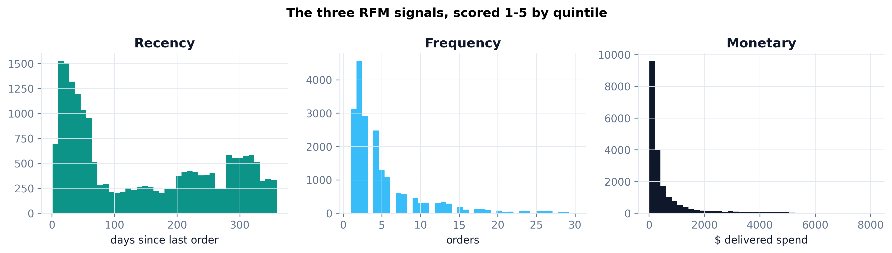
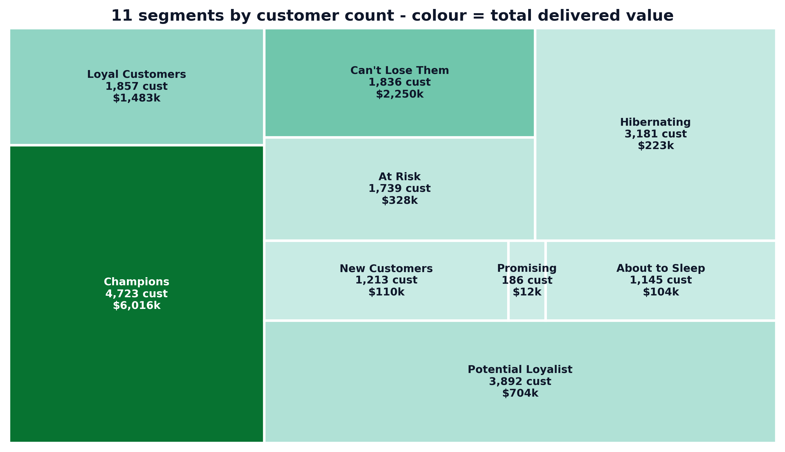
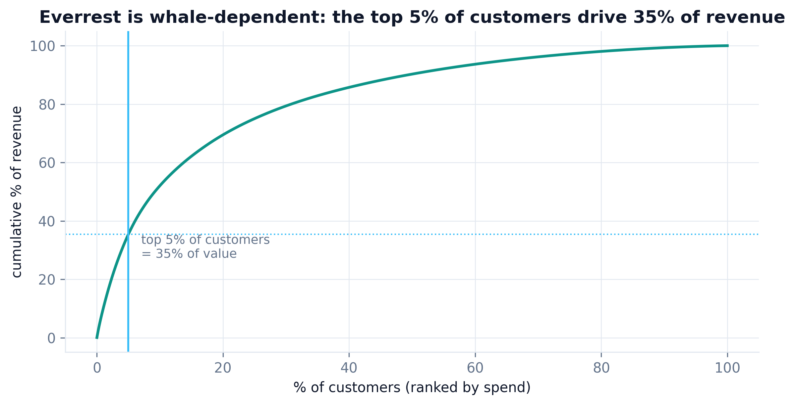
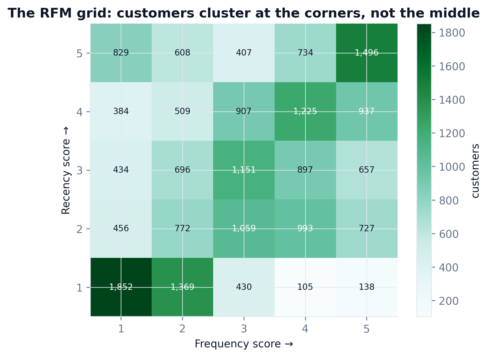
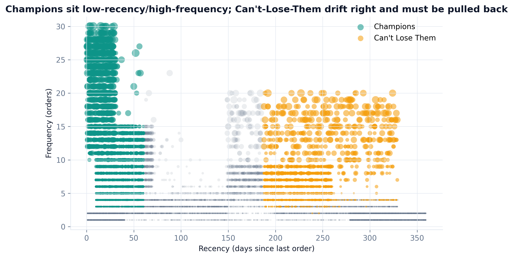
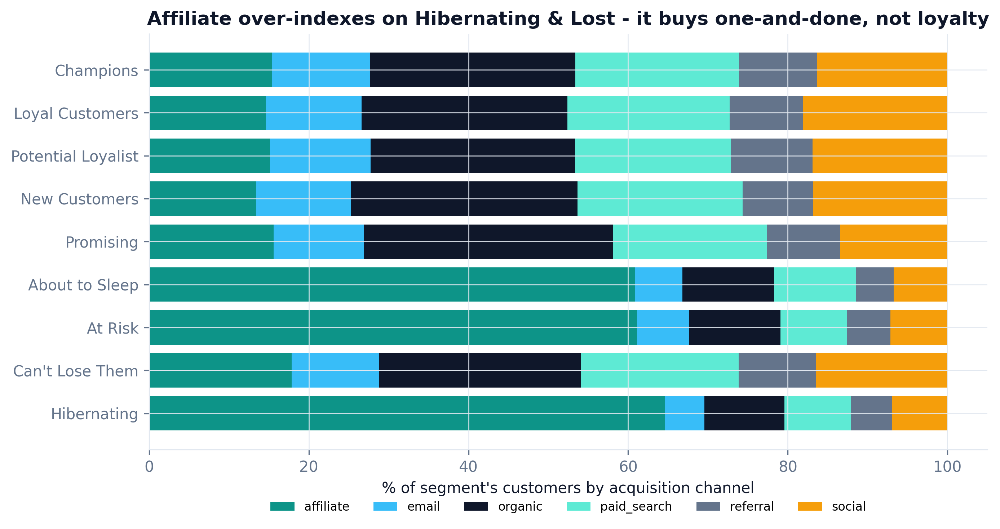
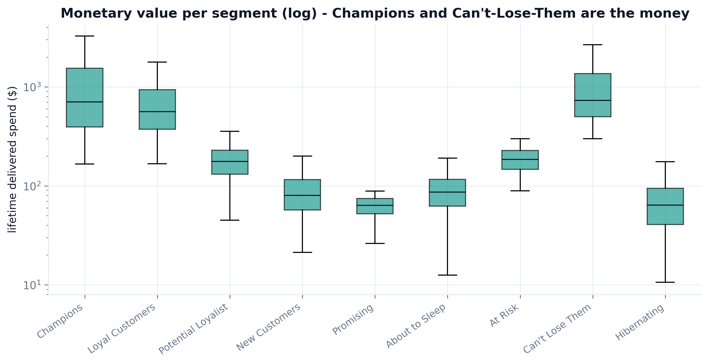
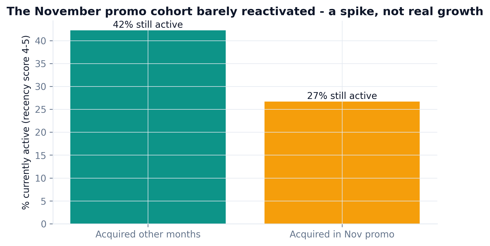
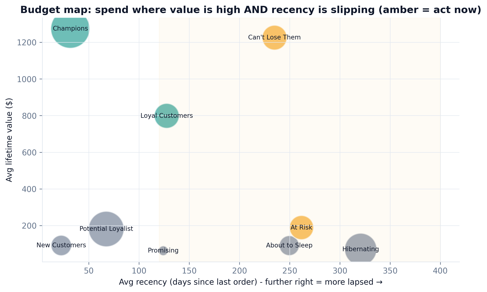
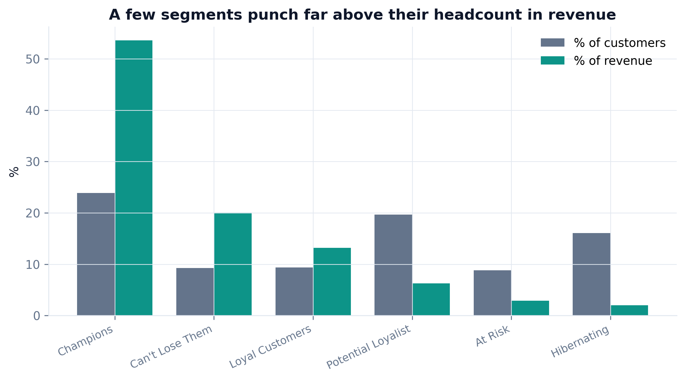
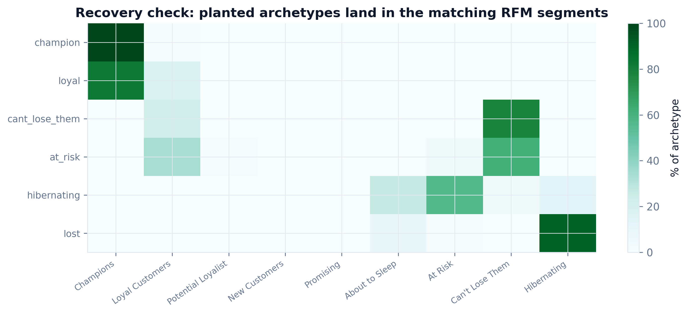
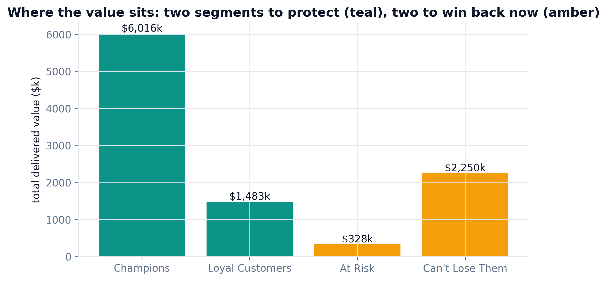
| Planted pattern | Caught by | $ at stake | Status |
|---|---|---|---|
| Whale concentration | Monetary pareto + treemap | top 5% = 35% of revenue | ✓ caught |
| Can't-lose-them lapsers | Segment map + budget map | $2,249,746 | ✓ caught |
| Affiliate one-and-done | Segment by channel | 2,056 customers, $143k | ✓ caught |
| Nov promo cohort | Cohort reactivation bar | 1,283 lapsed | ✓ caught |
| Returns-heavy segment | Delivered-only DQ gate | $991k excluded | ✓ caught |
| Recovery check (not planted): archetype → segment | Validation heatmap | method verified | ✓ confirmed |
A panel of five senior reviewer agents - each with 10+ years in data, data insights, and business - reviewed the first version (rfm_everrest_v1.py, kept in the repo). Every fix below was applied and the pipeline re-ran; the charts above are the post-review v2.
"v1 scored monetary on all orders, including returns. A customer who returns half their orders isn't high-value - gate to delivered revenue first."
"Raw RF codes (55 combos) aren't actionable, and qcut on tied frequency counts is unstable. Use rank and map to named segments."
"The channel view is missing - that's where the affiliate one-and-done story lives. And a raw RF-code bar has no action attached."
"A segmentation the CRM lead can't spend against is a poster. Which segment gets the next dollar, and what's it worth?"
"Prove the segments mean something. Check them against the planted archetypes on a clean re-run."
# v1 (before): monetary on ALL orders - returns counted as value rfm = orders.groupby("customer_id").agg(monetary=("order_value","sum")) # v2 (after): delivered-only - $991k of returns removed before scoring deliv = orders[orders.status == "delivered"] rfm = deliv.groupby("customer_id").agg(monetary=("order_value","sum"))
Install once, hand Claude your transaction tables - the same 6 steps segment your customer base and rank the retention spend.
git clone https://github.com/phoebefu6/phoebe-data-skills.git ln -s "$PWD/phoebe-data-skills/skills/how-to-rfm" ~/.claude/skills/